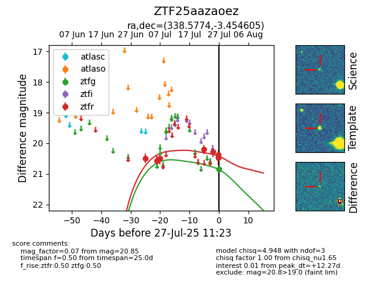

Target ZTF25aazaoez at 2025-07-23 11:52, see:
FINK: fink-portal.org/ZTF25aazaoez
Lasair: lasair-ztf.lsst.ac.uk/objects/ZTF25aazaoez
ALeRCE: alerce.online/object/ZTF25aazaoez
alt names
ZTF25aazaoez (ztf,fink)
coordinates:
equatorial (ra, dec) = (338.5774,-3.45460)
galactic (l, b) = (62.7668,-49.59792)
photometry
last ztfr=20.21
4 ztfr detections
